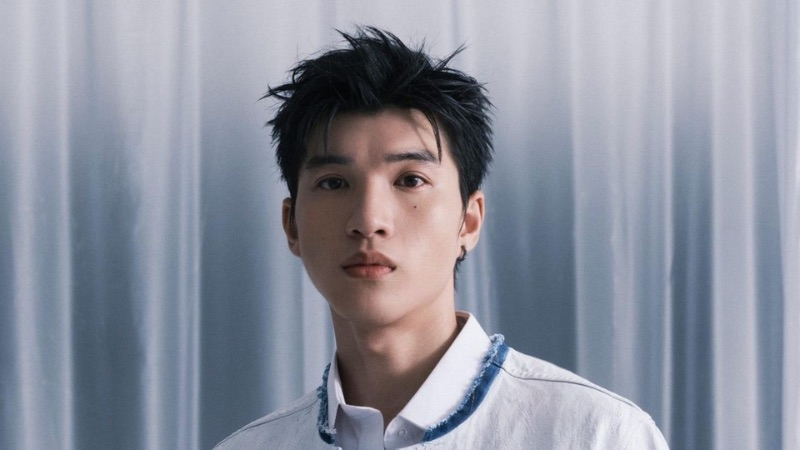

Vietnamese Music
Let's explore the top artists in Vietnam.


Son Tung M-TP
Son Tung M-TP is the preeminent star of V-pop, whose presence dominates both the charts and the streets of Vietnam. While he was the first Vietnamese artist to hit one million YouTube subscribers, he has since evolved into a global icon with a massive international following. Today, he continues to lead the industry by masterfully blending contemporary world sounds with his unique creative vision. Combining raw talent with high-end fashion and exceptional performance value, he is the key figure bringing Vietnamese music to the world stage.
Jack - J97
J97 is one of the most prominent names in V-pop, known for his massive hits and a dedicated fanbase that spans the country. He first rose to fame with a unique musical style that blends modern electronic beats with traditional Western Vietnamese folk melodies, creating a sound that resonates deeply with the masses. Despite the ups and downs of his career, Jack continues to be a force on digital platforms, consistently achieving millions of views and top trending status. With his distinct vocal color and knack for catchy songwriting, he remains a key figure in the contemporary Vietnamese music scene.
My Tam
My Tam rose to national prominence in the early 2000s, with her emotive ballads becoming anthems for an entire generation of students. Throughout her illustrious career, she has consistently produced chart-topping hits and earned significant international acclaim. Notably, her 2017 release, Tam 9, peaked at number nine on the Billboard World Albums Chart, cementing her status as the highest-ranking Vietnamese artist in history.
Soobin Hoang Son
Soobin Hoang Son is widely regarded as one of V-pop's most versatile "all-rounders," blending suave R&B vibes with powerful stage performances. After a decade of hits, he recently reaffirmed his superstar status through major music reality shows, showcasing his skills in producing, dancing, and singing. With a sophisticated image and a trendy musical direction, he remains a leading male icon who effortlessly bridges the gap between mainstream pop and underground roots.
Quang Hung Master D
Quang Hung MasterD is a unique phenomenon who achieved massive international fame, particularly in Thailand, before becoming a top-tier star in his home country. Known for his "catchy" melodies and modern production style, he has successfully brought a fresh, international flavor to the Vietnamese music scene. His ability to compose and produce his own music has earned him a reputation as a creative powerhouse with a rapidly growing global fanbase.
Hoa Minzy
Hoa Minzy is one of Vietnam’s most powerful vocalists, celebrated for her incredible range and emotional depth in pop ballads. After over a decade in the industry, she has evolved from a talent show winner into a top-tier national star with a string of massive hits and prestigious awards. Known for her tireless work ethic and charming personality, she has successfully balanced her musical career with a dominant presence on television and social media. In 2026, she remains a beloved figure who consistently touches the hearts of millions through her soulful performances and authentic connection with her audience.
HIEUTHUHAI
HIEUTHUHAI is currently the brightest star in the Vietnamese Rap scene, successfully transitioning from an underground rapper to a mainstream heartthrob. Combining sharp lyrical flow with immense "it-factor" and charisma, he has become the face of numerous high-end brands and major television programs. In 2026, he stands at the peak of his career, leading the new generation of artists who blend Hip-hop culture with commercial pop appeal.
Bich Phuong
Bich Phuong is often hailed as the "Queen of Indie-Pop and Concept" in Vietnam, constantly reinventing herself with every comeback. From emotional ballads to quirky, electronic folk-pop, her music is always accompanied by high-quality, cinematic visuals that set new standards for V-pop music videos. Her charming personality and innovative musical taste have made her a beloved cultural icon who always knows how to stay ahead of the curve.